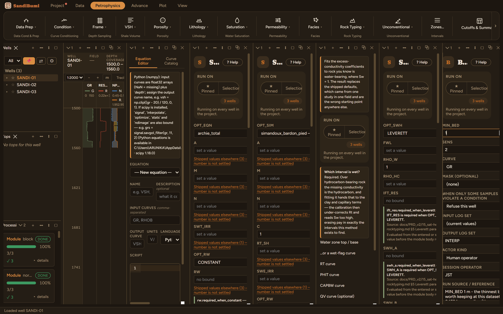

Finds bed boundaries from a curve's own steps and writes the bed number each sample falls in - the same segmentation Block's AUTO mode uses, exposed on its own so the beds can be looked at on a log before anything is averaged over them.
a new bed opens where |x − bed mean| > SENS·noise and the bed already spans MIN_BED noise = robust spread of the curve's first differences / √2 - the curve's noise, not its variability across the well
Bed Detect writes the bed number each sample falls in, found from the curve's own steps — the same segmentation Block's AUTO mode uses, exposed on its own so the beds can be looked at before anything is averaged over them. That order is the point: over-segmentation is what a step-finder gets wrong when it gets anything wrong, and a blocked curve computed from beds nobody checked looks perfectly reasonable.
"MIN_BED must be set — Thinnest bed worth calling a bed"
No default, same reasoning as the despike window: the thinnest thing worth calling a bed is a property of the tool and the rock.
MIN_BED 1 m — the thinnest bed worth keeping at this dataset's 0.1524 m sampling (the despike-window argument again), and SENS 2, the shipped two-noise-units convention. The noise scale is measured from the curve's own sample-to-sample differences divided by √2 — the curve's noise, not how much it varies across the well, so a strongly layered section does not desensitize its own boundary detection.

On these wells: 3 clean, finding 18–19 beds per well over the ~60 m sections. Before running Block against it, put GR_BED in a track as class blocks and judge the boundaries against the log — then Block with OPT_BEDS = CLASS pointing at the curve you have actually inspected.
Everything below is generated from the same manifest the application builds this module’s pane from — descriptions, defaults, sources, ranges and pre-run checks here are exactly what the running application enforces.
Writes the bed number each sample falls in, found from the curve's own steps — the same segmentation Block's AUTO mode uses, exposed on its own so the beds can be LOOKED AT on a log before anything is averaged over them. That order matters: over-segmentation is what a step-finder gets wrong when it gets anything wrong, and a blocked curve computed from beds nobody checked looks perfectly reasonable. Put the bed curve in a track as class blocks, judge it against the log, then run Block with OPT_BEDS = CLASS pointing at it. A sample opens a new bed when it sits further from the running bed mean than SENS times the curve's own noise AND the bed already spans MIN_BED. The noise is measured from the curve's own sample-to-sample differences, so it is the curve's noise rather than how much it varies across the well. MIN_BED has no default: the thinnest thing worth calling a bed is a property of the tool and the rock.
| Role | Description | Resolves to | Required | Notes |
|---|---|---|---|---|
| CURVE | Curve to segment | GR | yes | — |
Whole-well defaults; per-zone values from the Zones pane take precedence inside their zones (except where a parameter is marked one-value-per-well).
Thinnest bed worth calling a bed
How far off the bed's mean is a new bed, in noise units
| Name | Description |
|---|---|
| OUT_CURVE | Bed index |